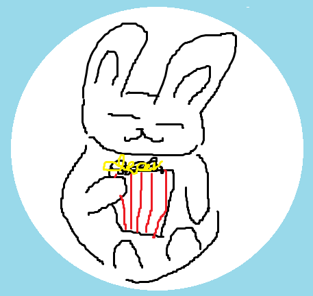
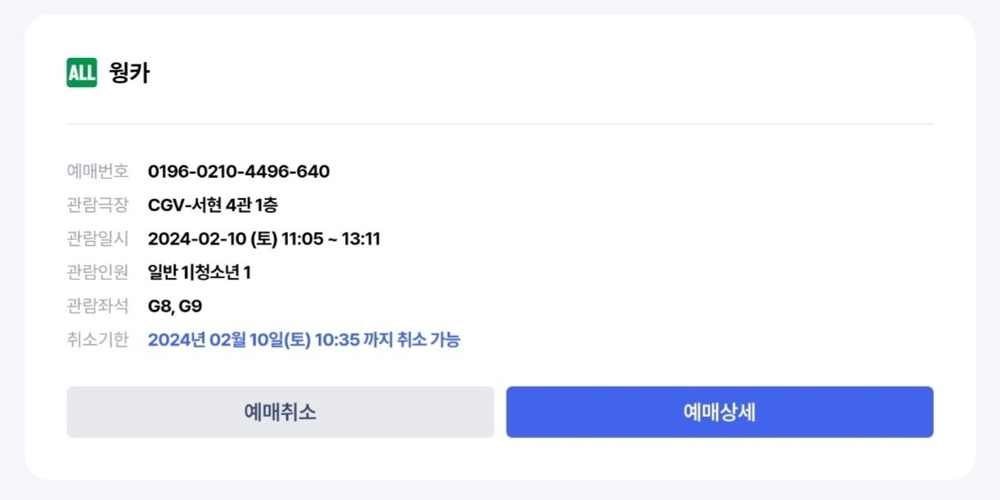
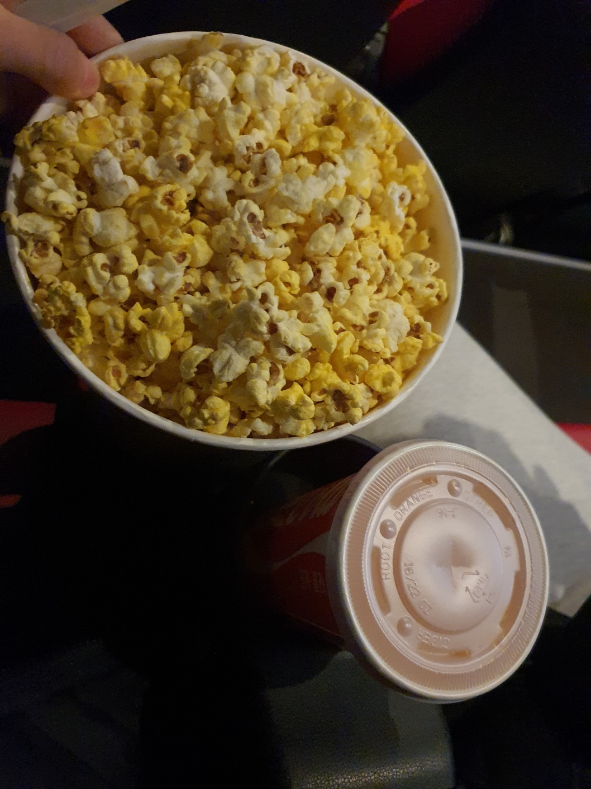

김현지의 영화일기
1. 웡카
2024.2.10
2. 추가예정
2024.x.xx
1. 《웡카》
- 2024.2.10
- 평점 7/10
• 영화 정보
《웡카》는 로알드 달의 동화 《찰리와 초콜릿 공장》의 후속작으로, 서브 주인공인 윌리 웡카의 과거사를 다룬 작품이다
2024년 1월 31일에 개봉되었고, 평론가 및 관객들에게 좋은 평을 받고 있는 작품이다
주요 등장인물은 주인공인 윌리웡카, 그의 조력자인 누들, 파이퍼 벤츠, 로티 벨, 아바커스 크런치, 래리 처클스워스, 윌리 웡카가 꿈을 펼치지 못하도록 막는 경찰서장, 줄리어스 신부, 슬러그워스, 프로드노즈, 피켈그루버, 스크러빗 부인, 블리처, 그리고 그 외의 인물인 움파룸파등이 있다
《웡카》는 개봉 9일째에 대한민국 관객 누적 100만명을 돌파했고 개봉일 자정을 기준으로 50.4%의 예매율로 예매율 1위를 기록했다고 전해지고 있다
아래의 두 동영상은 현재 공개된 예고편이다
• 영화를 보게 된 계기
어렸을 적에 《찰리와 초콜릿 공장》영화도 보고 책도 읽었던 적이 있는데 후속작이 나왔다고 들고 보고 싶다는 생각을 가지게 되었다
그러나 그냥 잊고 지내고 있었는데 2월 10일에(설날) 갑자기 아빠가 설날인데 영화나 보러 가자고 하셔서 이 영화가 떠올랐다
마침 쿠폰도 있었고 가까운 cgv에서 상영도 하고 있어서 사다리타기를 해서 나와 언니가 영화를 보러가게 되었는데 언니가 보기 싫다고 불평해서 아빠랑 내가 가게 되었다

• 감상평
사실 왜인지는 모르겠는데 영화 티켓을 발급 받을 때 쿠폰도 받게 되었다
음료수 무료 쿠폰, 세트 50% 할인 쿠폰, 고소팝콘 1000원 쿠폰이 있어서 음료수 무표랑 팝콘 1000원 쿠폰을 사용했다
영화관에서 영화 보면서 팝콘이랑 음료수 먹는 게 정말 오랜만이어서 좋았던 것 같다
(그런데 팝콘이 대자라서 배불렀다 이렇게 먹고 집에 가서 바로 점심도 먹었기 때문이다)
영화는 재밌었다 약간 뻔한 내용이긴 했지만 그래도 재밌었다 초콜릿이 많이 나와서 팝콘과 음료수가 없었다면 정말 배고팠을 것 같은 영화였다
그런데 《웡카》가 《찰리와 초콜릿 공장》의 과거 이야기이니 이제 다시 《찰리와 초콜릿 공장》를 봐야할 것 같다
(빠른 시일 내로 볼 것 이다 아마 내일?)
